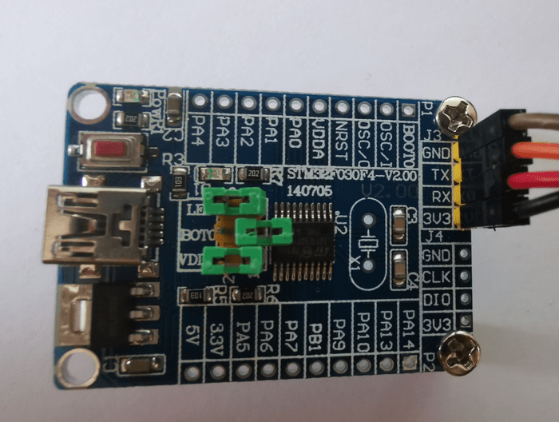
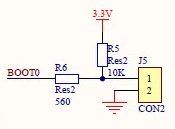

2.1 UART Validation
Before I start writing some code that communicates over the Universal
Synchronous Asynchronous Receiver Transmitter (USART) peripheral, I need
to validate that I have working hardware and software tools.
Board Connectivity
Even if the peripheral is capable of doing synchronous communication
(that’s the S in USART), asynchronous communication (that’s the A) which
only needs 3 wires (GND, TX, RX, (no clock)) is usually what is needed
in non specialized cases.
Boards sold online often have dedicated pre-soldered pins for UART
connectivity similar to what I have seen before for the SWD interface.
The VCC-GND board I used previously doesn’t have such dedicated pins but the
functionality is wired on the pins PA9 (TX) and PA10 (RX).
I will use a board with dedicated pins (GND, TX, RX, VCC 3.3V). Board
specifications can be found
here.

USB to UART adapter
An adapter is needed to connect to a PC. Either due to difference in
voltage (RS232) or serial protocol (USB). Pins PA9 and PA10 are
5V tolerant, so you could interface an Arduino Uno to a STM32 board to use
it as a USB to serial adapter if you happen to have a spare Arduino Uno.
I use an adapter based on Silicon Labs CP2102 chipset.
Windows has USB driver available for Silicon Labs CP210x chipset family.
The adapter enumerates as COM4 on my Windows PC.
I connect the adapter to the board to provide 3.3V and make sure to cross
RX and TX wires (STM32 RX <-> Adapter TX, STM32 TX <-> Adapter RX).
STM32 Cube Programmer UART connection
So far I have been using the ST-Link interface with STM32 Cube
Programmer to flash and debug. The application also support the UART
interface.
Embedded Boot Loader
A reset of the board while jumper BOOT0 is removed will select the
System memory instead of the flash memory for execution. This is where
the serial flash loader protocol is implemented on chipset side.

Testing
The checklist goes like this:
- Board connected to USB adapter
- USB driver installed on Windows PC
- USB adapter plugged in and enumerates as a COM port
- STM32 Cube Programmer list the COM port in device selection menu
- BOOT0 jumper removed and board reset to start the embedded flash
loader.
- Board flash memory can be erased, written or read with the programmer.
Checkpoint
I have now working hardware and software that communicate through the
serial link.
Next, I will make sure the code I wrote so far is
working on the new board.
© 2020-2024 Renaud Fivet